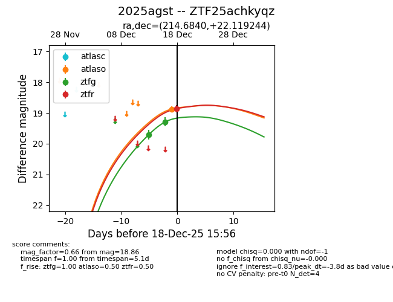
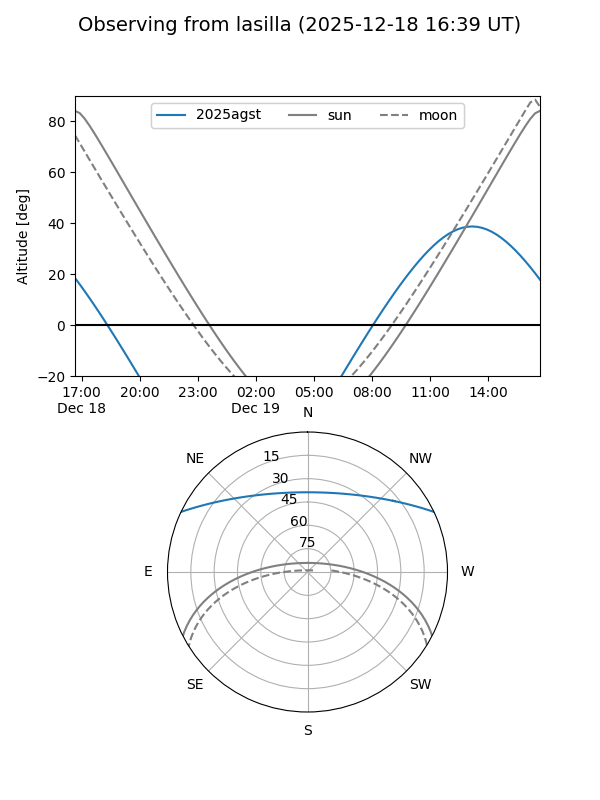
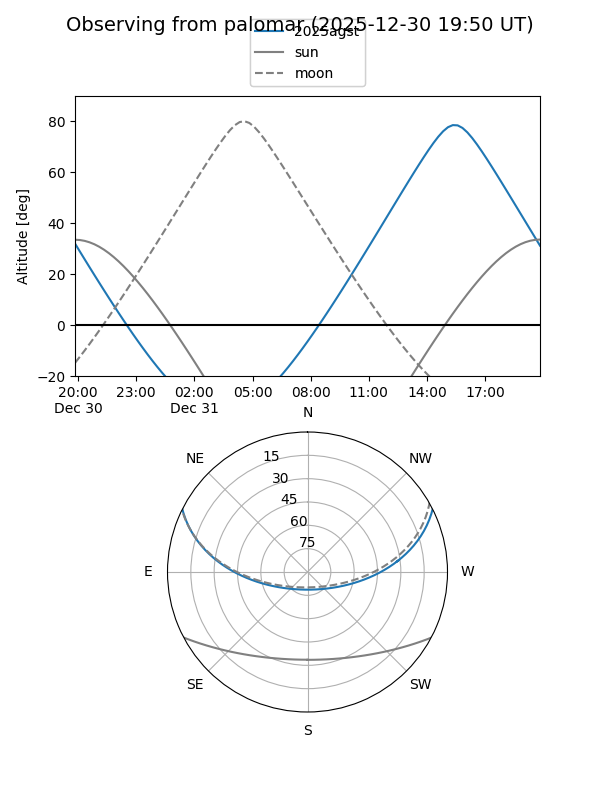
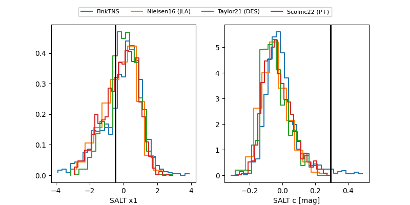

2025agst
Target 2025agst at 2025-12-18 15:57
Aliases and brokers:
FINK: fink-portal.org/ZTF25achkyqz
Lasair: lasair-ztf.lsst.ac.uk/objects/ZTF25achkyqz
ALeRCE: alerce.online/object/ZTF25achkyqz
TNS: wis-tns.org/object/2025agst
YSE: ziggy.ucolick.org/yse/transient_detail/2025agst
alt names
ZTF25achkyqz (ztf,fink_ztf)
2025agst (tns,yse)
Coordinates:
equatorial (ra, dec) = 214.6840,+22.11924
equatorial (HMS+DMS) = 14:18:44.16,+22:07:09.28
galactic (l, b) = (23.5287,+69.56805)
Photometry
last atlaso=18.87, ztfg=19.29, ztfr=18.86
1 atlaso, 2 ztfg, 1 ztfr detections
Lightcurve

Visibility


Additional plots
